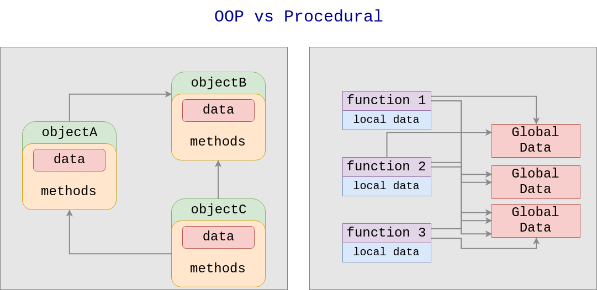

Keyboard shortcuts:
N/СпейсNext Slide
PPrevious Slide
OSlides Overview
ctrl+left clickZoom Element
If you want print version => add '
?print-pdf' at the end of slides URL (remove '#' fragment) and then print.
Like: https://wwwcourses.github.io/...CourseIntro.html?print-pdf
Python for Machine learning - Lecture 2, Part 2
Created for

Iva E. Popova, 2022,

Object-oriented Programming Paradigm
A step over Procedural Programming
- In procedural-languages (C, Fortran, Pascal) the data structures are separated from algorithms of the software entities (a step over Assembly languages)
- But in big projects (consider CRM) it is:
- difficult to describe the problem solely in terms of procedures/functions.
- more difficult to trace which function manipulates which data.
The benefits
- A higher level of abstraction for solving real-life problems.
- The software system can be think in therms of objects, communicating with each other.
- Objects are reusable software components, as each encapsulates the data and logic for its operation.
- A black-box, with input/output, which do what it has to do.
OOP vs Procedural Paradigms
{kind=link}
OOP - Main Concepts
OOP - Main Concepts
Class
- A class is a blueprint, template, or prototype that defines and describes objects attributes (data) and behaviour(methods)
- Can be seen as a user-defined data type
Object
- An instance of a class - an entity of given class, that can be used in a program
- Instances of same class have similar properties and behaviour
Instances of a class - diagram

Inheritance
- A class can inherit attributes and methods from another base class, and at the same time to define its own.

Classes and Objects in Python
Classes and Objects in Python
Minimal Class definition
The minimal class definition in Python looks like:
class ClassName:
pass
# let's create the class Person (dummy, but real):
class Person:
pass
Object Creation
In Python, it's simple:
object_name = ClassName()
# create Person class (still dummy):
class Person:
pass
# create objects of class Person:
pesho = Person()
maria = Person()
# let's check:
print( type(pesho) )
print( type(maria) )
# <class '__main__.Person'>
# <class '__main__.Person'>
Objects created from the same class have same type, but they are different entities:
class Person:
pass
maria = Person()
pesho = Person()
print( type(pesho) == type(maria) )
print(pesho == maria )
True
False
Attributes
Attributes
Overview
- The attributes describes an object's characteristics. I.e. specific data which characterize the object.
- Usually, objects from same class, have same attributes, but with different values.
- In Python, we can dynamically create arbitrary new attributes for existing objects
class Person:
pass
maria = Person()
pesho = Person()
# only maria object will have the attribute 'name'. Not a good practice...
maria.name = 'Maria Popova'
Accessing Object's Attributes - the dot notation
# write in object attribute:
object_name.attribute = "value of any type"
# read from attribute:
var = object_name.attribute
maria = Person()
# write in object attribute:
maria.name = "Maria"
print(maria.name)
# read from attribute:
mn = maria.name
print(mn)
As we'll see later, this is not the proper way to create object's attributes in Python. This is an example of dot notation, used to access object's attributes
Attributes - internal
- Attributes are stored internally in a dictionary structure
- Each object has associated dictionary attribute, named
__dict__, which stores an object's (writeable) attributes
class Person:
pass
maria = Person()
# set attribute:
maria.name = "Maria"
maria.age = 100
print(maria.__dict__)
{'name': 'Maria', 'age': 100}
Class Attributes
- You can define Class Attributes, which will be shared across all class instances (the objects)
class Person:
name = "Anonymous"
age = 100
maria = Person()
pesho = Person()
print(maria.name, maria.age)
print(pesho.name, pesho.age)
Anonymous 100
Anonymous 100
Methods
Methods
Overview
- A method is a function that belongs to a class.
- Class methods specify the class behaviour
Syntax
class ClassName:
def method_name(self):
pass
- Note, that you must define at least one parameter in the method.
- It will take (automatically) a reference to the object, which called that method.
- You can name the parameter as you wish, but the convention is to name it
self
Syntax - example
class Person:
def greet(self):
print("Hi there! I'm", self.name)
# create some objects of class Person:
maria = Person()
maria.name = "Maria Popova"
pesho = Person()
pesho.name = "Pesho"
# call greet() method on maria. Python will send the maria object reference to the self parameter.
maria.greet()
# call greet() method on pesho
pesho.greet()
# OUTPUT:
# Hi there! I'm Maria Popova
# Hi there! I'm Pesho
more on self:
When a method is invoked from an object, Python automatically passes the object reference to the first parameter in the method definition.
class TestSelf:
def test(self, obj):
print(self == obj)
obj1 = TestSelf()
# lets check if obj1 == self
obj1.test( obj1 )
# True
Class Constructor
the __init__() method
__init__() method
What is a Class Constructor
- Class Constructor is a method, called automatically when each new object is created.
- A class constructor defines the action which will happens when a new object instance is created.
- Usually, this actions include setting an initial value for the object attributes.
Syntax
- In Python, the Class Constructor is implemented by a special method named
__init__() - Example - note that the
__init__method is called each time an object is created:
class ClassName:
def __init__(self):
pass
# class definition
class ClassA:
def __init__(self):
print("An object of ClassA is created!")
# objects creation:
obj1 = ClassA()
obj2 = ClassA()
# output:
# An object of ClassA is created!
# An object of ClassA is created!
Person Class Constructor - Example1
- Constructor is the place, where we set the initial instance attributes:
class Person:
def __init__(self, name, age):
self.name = name
self.age = age
def greet(self):
print(f"Hi there! I'm {self.name}, {self.age} years old!")
maria = Person("Maria Popova", 25)
pesho = Person("Pesho", 27)
maria.greet()
pesho.greet()
# Hi there! I'm Maria Popova, 25 years old!
# Hi there! I'm Pesho, 27 years old!
Person Class Constructor - Example2
- Note, that instance methods are just an ordinary Python functions, so we can use everything we know on functions in instance methods:
class Person:
def __init__(self, sur_name="", **kw):
self.sur_name = sur_name
self.name = kw['name']
self.age = kw['age']
def greet(self):
print(f"Hi there! I'm {self.name}, {self.age} years old!")
maria = Person(name="Maria", sur_name="Popova", age=25)
pesho = Person(age=27, name="Petar")
maria.greet()
pesho.greet()
Modules in Python
Modules in Python
Overview
- Modules allows to split a long program into several files
- for instance - to put function/class definitions in one or more files, and the main program to be written in a separate file.
- Each module creates its own namespace.
- A module is a Python file containing definitions and statements.
- Module == Python file
├── my_app
│ ├── app.py # the main file
│ ├── helper_module.py # a module file
Import module: import X
- To use a module, you have to import it first.
- As a module generates its own namespace, you have to prefix the imported names with the module name:
def get_user_name():
return input('Enter your name:')
def greet(user_name):
print(f'Hello, {user_name}!')
# import the helper_module:
import helper_module
# use helper_module
user_name = helper_module.get_user_name()
helper_module.greet(user_name)
Module Execution
- A module can contain executable statements as well as function definitions. Usually these statements are intended to initialize the module.
- Statements in a module are executed only the first time the module name is encountered in an import statement.
- But as a module is just a Python file, we can execute it as a standalone program.
Module alias: import X as Y
import helper_module as hm
user_name = hm.get_user_name()
hm.greet(user_name)
Import object from module: from X import Y
- You can import an object from module, using the
from X import Ynotation. After that, you can use the name (Y), without having to prefixing it. - You can import more that one object, if you separate them with comma
from helper_module import get_user_name, greet
user_name = get_user_name()
greet(user_name)
Import object from module: from X import *
- Imports all objects from a module.
- Not recommended to use it, as a name collision could occurs.
from helper_module import *
user_name = get_user_name()
greet(user_name)
Where import looks for a module?
- The directory containing the input script
- the directories specified in the PYTHONPATH environment variable
- The installation-dependent default.
Python's built-in modules
- or why Python is "Batteries Included"
- Python Module Index
- to use a built-in (standard) module, you have to import it!
Help on Python's built-in modules
- Using the
help('module_name')function provides useful information about a module. - If you want to check all built-in modules, just use
help("modules") - Most modules have defined the
__file__attribute (discussed in next slides), which contain the path where the module is installed
import datetime
print( datetime.__file__)
# /usr/lib/python3.5/datetime.py
Python's third-party modules
- The Python Packaging Index PyPIis a public repository of open source licensed packages made available for use by other Python users.
- We are going to see how to install third-party modules after we get familiar with Python's Virtual Environments
Import-related module attributes
Import-related module attributes/global variables
The __file__ and __name__ variables
- Within a python file we can use the global
__file__and__name__variables. __file__variable contains the pathname of the file from which the module was loaded- When a Python module is imported,
__name__is set to the module’s name, without the .py extension - When a Python module is executed as a standalone script, the
__name__variable is set to '__main__' value
print( "__file__:", __file__)
print( "__name__:", __name__)
python helper_module.py
# __file__: /some/path/helper_module.py
# __name__: __main__
import helper_module
# __file__: /some/path/helper_module.py
# __name__: helper_module
__name__
- When Python interpreter reads a
.pyfile, it executes the code in it! - If a
.pyfile is executed as a module: __name__is set to module's own filename- If a
.pyfile is executed as stand-alone program: __name__is set to"__main__"
__name__ - examples
Create in same directory next Python files:
import helper_module
if __name__ == "__main__":
print("helper_module is executed as stand-alone py file")
else:
print("helper_module is imported as module")
- Run the
main.pyand look at the output - Run the
helper_module.pyand look at the output
__file__
- Stores the full filename (including path) of the file/module being executed
- Will be same, no matter if the file is executed as a stand-alone or as a module.
- If we need to strip the path, and get just the filename,
__file__ - examples
Create in same directory next Python files:
import helper_module
print( "__file__:", __file__)
- Run the
main.pyand look at the output - Run the
helper_module.pyand look at the output
Packages in Python
Packages in Python
Overview
- A Python package is simply a group of Python module(s), usually stored in one directory
- Packages are a way of structuring Python’s module namespace by using “dotted module names”.
make directory a package: __init__.py
- You should put an
__init__.pyfile in the directory, which you want it to be treated as package from Python. __init__.pycan be an empty file- or you can put some initialization code for the package
$ tree my_app
my_app/
├── app.py
└── packA
├── greet.py
├── __init__.py
└── packB
├── get_data.py
└── __init__.py
from python 3.2 __init__.py must be present only in Regular Packages, but can be omitted in Namespace Packages. More info in docs
Importing packages
- You can import a module from a package using the same mechanism as importing a single module. But do not forget - a package makes its namespace, so you must use the dot notation.
- If we have next structure:
- We can import
get_datamodule inappwith:
$ tree my_app
my_app/
├── app.py
└── packA
├── greet.py
├── __init__.py
└── packB
├── get_data.py
└── __init__.py
import packA.packB.get_data
pyc files and __pycahce__ folder
- Python automatically compiles a script to so called byte code, before running it.
- To speed up loading modules, when a module is imported for the first time, or when the source is more recent than the current compiled file, a
.pycfile containing the compiled code will be created. - When you run the program next time, Python uses this file to skip the compilation step.
- Python caches the compiled version of each module in the automatically created __pycache__ directory under the name module.version.pyc
- If you really need to tell python not to generate the compiled versions, you can set the PYTHONDONTWRITEBYTECODE env. var.
Execute python module from command line
Execute python module from command line
- We can use
python -m module_name from terminal in order to execute a module - Note that since the argument is a module name, you must not give a file extension (.py).
python -m helper_module
# note the difference between:
python3 helper_module.py